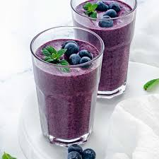

Blueberry Smoothie

Description:
Blueberry smoothie recipes are a great way to use fresh or frozen berries, and this is a delicious one! This year-round smoothie can be made with either fresh or frozen blueberries.
Ingredients:
- 1 cup blueberries
- 1 container plain yoghurt
- 3/4 cup milk
- 2 tablespoons sugar
- 1/2 teaspoon vanilla extract
- 1/8 teaspoon ground nutmeg
Steps:
- Gather all ingredients.
- Blend blueberries, yogurt, milk, sugar, vanilla, and nutmeg in a blender until frothy, scraping down the sides of the blender if needed.
- Divide between 2 glasses and serve immediately. Enjoy!
Nutrition facts:
- Calories-211kcal
- Protein-10g
- Carbs-36g
- Fat-4g
Home